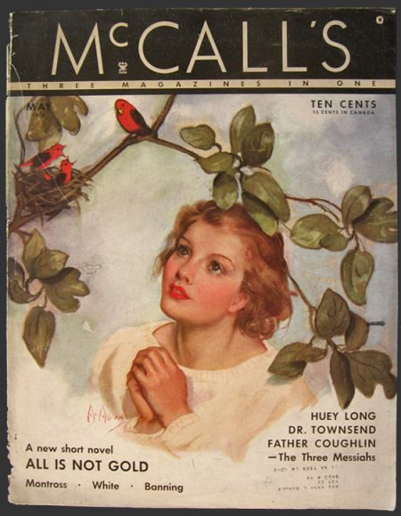
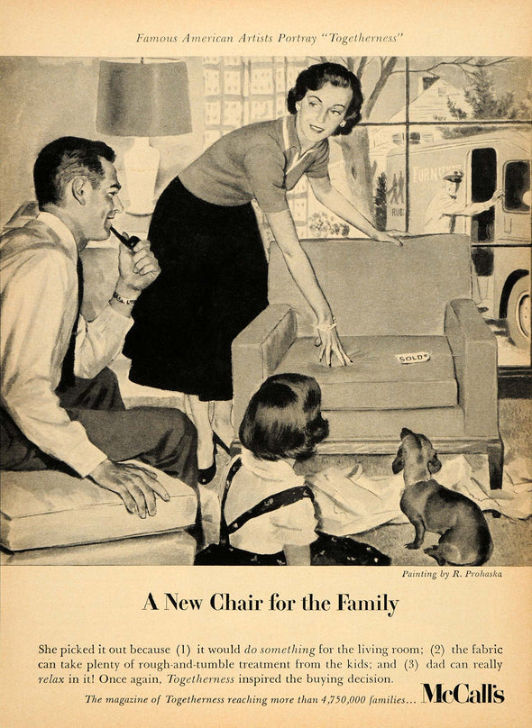

Discover what McCall was and will be
What is McCall?
The company is named after the founder of its namesake magazine, James McCall, who was a Scottish tailor. For 125 years, McCall's reflected the roiling changes in the lives of American women -- as well as the passing fads of the publishing business.
Why did the magazine discontinue?
McCall's circulation was kept artificially high by cheap subscription prices that didn't pay for the cost of the magazine. It wasn't selling well on the newsstand and advertisers weren't flocking to it. Change in ownership in 2000 to entertainer Rosie Oɽonnell and the magazine was renamed to Rosie in 2001. The company ceased publication at the end of 2002 as O' Donnell stated that she didn't believe the magazine reflects her vision.
New light to the magazine
O' Donnell stated, “I wanted a magazine that celebrates real women, that understands that they care about more than waistlines or the latest makeup styles or fashions, that they want to be relevant and help each other and care about the world.”
New and Improved
Drag image to reveal rebrand